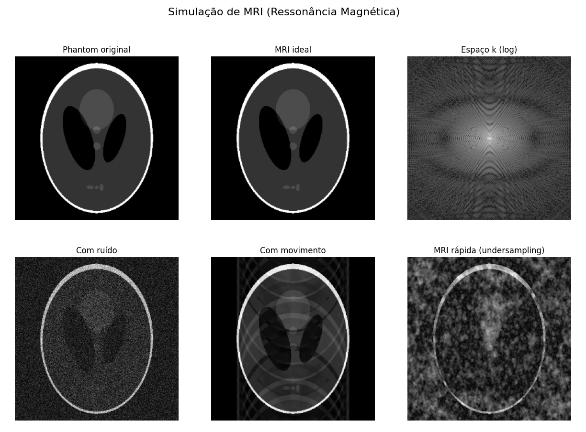

Simulação de Ressonância Magnética (MRI) em Python
Projeto desenvolvido como parte do portfólio académico em Engenharia Biomédica.
Objetivo
Este projeto foi realizado com o objetivo de compreender e demonstrar, de forma prática e acessível, os princípios fundamentais da formação de imagens por Ressonância Magnética (MRI). Através de uma simulação computacional, recriei o processo de aquisição e reconstrução de imagens médicas, bem como os efeitos de ruído, movimento e aquisição acelerada (undersampling). O foco esteve em traduzir conceitos teóricos complexos em exemplos visuais e intuitivos, que permitam uma melhor compreensão do funcionamento da técnica.
Ferramentas Utilizadas
- Python 3.10
- NumPy (processamento numérico)
- Matplotlib (visualização)
- scikit-image (phantom de Shepp-Logan e manipulação de imagens)
Como Funciona
A simulação segue a lógica de um exame real de MRI:
- O phantom de Shepp-Logan foi utilizado como modelo de um corte cerebral.
- A imagem é transformada para o espaço k (domínio da frequência) através da Transformada de Fourier.
- A reconstrução ideal é realizada com a Transformada de Fourier inversa.
Foram ainda simulados cenários clínicos reais:
- Ruído: baixa relação sinal/ruído, comum em exames rápidos.
- Artefactos de movimento: provocados por movimentos involuntários do paciente.
- Undersampling: aquisição acelerada, sacrificando qualidade em prol da velocidade.
Desafios
Um dos principais desafios foi adaptar um processo altamente técnico e clínico, como o da ressonância magnética, a um ambiente de simulação computacional acessível. Foi necessário simplificar os modelos físicos sem perder a essência dos fenómenos simulados. Outro desafio foi garantir que as imagens obtidas fossem suficientemente claras para transmitir as diferenças entre ruído, movimento e undersampling.
Aprendizagens
Este projeto permitiu consolidar conhecimentos fundamentais de processamento de sinais e imagens médicas, além de reforçar a importância do espaço k e da reconstrução por Fourier na MRI. Também demonstrou como fatores práticos, como o tempo de aquisição e a estabilidade do paciente, impactam diretamente na qualidade diagnóstica das imagens.
Mais do que um exercício técnico, este trabalho ajudou a transformar teoria complexa em resultados visuais, criando uma ponte entre a matemática, a tecnologia e a prática clínica.